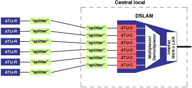

El ADSL necesita una pareja de módems por cada usuario: uno en el domicilio del usuario (ATU-R) y otro (ATU-C) en la central local a la que llega el bucle de ese usuario.
Esto complica el despliegue de esta tecnología de acceso en las centrales. Para solucionar esto surgió el DSLAM : un chasis que agrupa gran número de tarjetas, cada una de las cuales consta de varios módems ATU-C, y que además concentra el tráfico de todos los enlaces ADSL hacia una red WAN.

La integración de varios ATU-Cs en un equipo, el DSLAM, es un factor fundamental que ha hecho posible el despliegue masivo del ADSL. De no ser así, esta tecnología de acceso no hubiese pasado nunca del estado de prototipo dada la dificultad de su despliegue, tal y como se constató con la primera generación de módems ADSL.
|
|
|
|